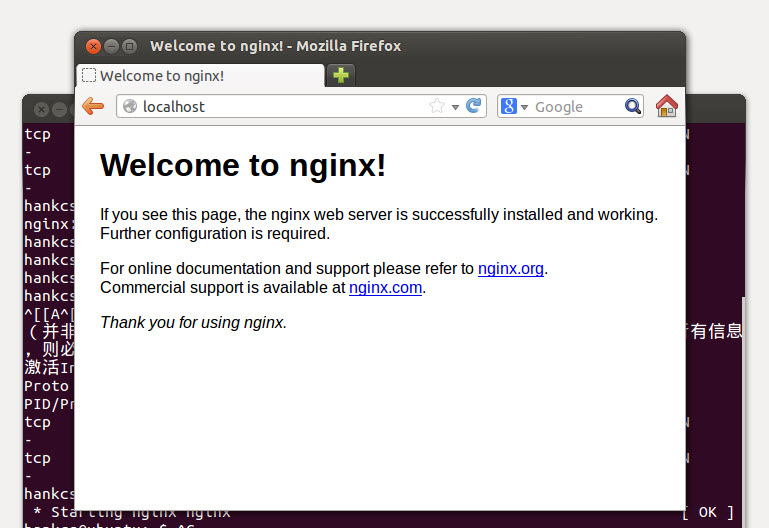

今天在ubuntu10.04上面安装nginx，安装完成之后尝试启动nginx，使用命令：
- sudo /etc/init.d/nginx start
结果提示错误：
- hankcs@ubuntu:~$ sudo /etc/init.d/nginx start
- [sudo] password for hankcs:
- * Starting nginx nginx nginx: [emerg] bind() to [::]:80 failed (98: Address already in use)
- nginx: [emerg] bind() to [::]:80 failed (98: Address already in use)
- nginx: [emerg] bind() to [::]:80 failed (98: Address already in use)
- nginx: [emerg] bind() to [::]:80 failed (98: Address already in use)
- nginx: [emerg] bind() to [::]:80 failed (98: Address already in use)
- nginx: [emerg] still could not bind()
我看了一下端口占用情况，并且尝试杀了进程：
- hankcs@ubuntu:~$ netstat -ntpl
- （并非所有进程都能被检测到，所有非本用户的进程信息将不会显示，如果想看到所有信息，则必须切换到 root 用户）
- 激活Internet连接 (仅服务器)
- Proto Recv-Q Send-Q Local Address Foreign Address State PID/Program name
- tcp 0 0 127.0.0.1:53 0.0.0.0:* LISTEN -
- tcp 0 0 127.0.0.1:631 0.0.0.0:* LISTEN -
- hankcs@ubuntu:~$ killall -9 nginx
- nginx：没有发现操作
遇到这种问题我先用中文搜索了一下答案，发现大家都在装逼地说要杀nginx重复的进程。我试了下发现是扯淡，于是看了谷歌搜到的第一个英文页面，老外说是nginx先监听了ipv4的80端口之后又监听了ipv6的80端口，于是就重复占用了。更加坑人的是你去看了端口占用它又把80端口释放了，是不是很囧。
解决方案是编辑nginx的配置文件
- hankcs@ubuntu:~$ sudo gedit /etc/nginx/sites-available/default
修改这一段：
- listen 80;
- listen [::]:80 default_server;
为
- listen 80;
- listen [::]:80 ipv6only=on default_server;
然后启动nginx，完美解决！

转载须注明：码农场 » 解决nginx: [emerg] bind() to [::]:80 failed (98: Address already in use)
/16
正解
谢谢支持！ /02
thanks,you’re a great man.
楼主，我是这方面的菜鸟。我按照你说的命令： /etc/nginx/sites-available/default
提示我的是 找不到这个文件。
我应该怎么办？
请查看你的/etc/nginx/sites-available/目录下配置文件名称是不是default
没有/etc/nginx 目录+1
看样子你的安装路径与我不同，你可以试试搜索所有包含listen [::]:80 default_server;的文件
解决了，谢谢~
vim /etc/nginx/conf.d/default.conf
server {
listen 80 default_server;
#listen [::]:80 default_server;
把第二行注释掉，成功解决